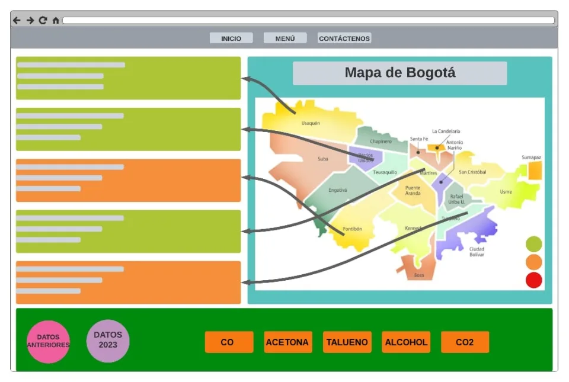
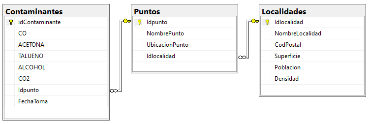
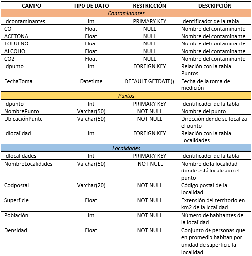

Objetivos específicos
- Realizar y socializar una encuesta para la comunidad San bonaventuriana sobre el conocimiento respecto a la calidad del aire en Bogotá y la actual plataforma de la Red de monitoreo de la calidad del aire de Bogotá.
- Crear un MockUp inicial del diseño pensado para la plataforma del Proyecto.
- Actualizar e implementar la Base de Datos para mostrar la toma de información.
Encuesta
Encuesta AirSensePro
Mockup

Cambios realizados
Para este Semestre se decidieron hacer algunos cambios importantes para lograr tener un mejor desarrollo del Proyecto Integrador, los cambios son:
- Cambio del Objetivo General de "Desarrollar una plataforma para consolidar información de la calidad del aire de Bogotá por medio de herramientas de la era digital" a "Desarrollar una plataforma para visualizar información meteorológica de Bogotá por medio de herramientas digitales".
- Cambio de la pregunta problema a: "¿Cómo desarrollar una plataforma que pueda generar informes meteorológicos de la ciudad de Bogotá para una mejor visualización de la información?".
- Cambio del Título del Proyecto a "Desarrollo de una plataforma para la visualización de la información meteorológica de la EMS".
- Cambio del nombre del Proyecto a "EMS" (Estación Meteorológica del Semillero de investigación en tecnologías aplicadas).
- Cambio del diseño de la BD y todo lo relacionado.
MER

Diccionario de datos

Codigos de ejemplo
Poster proyecto EMS